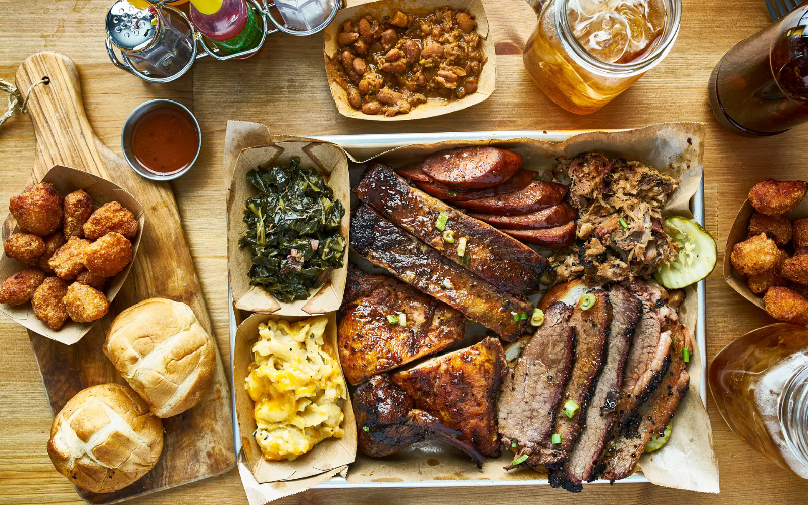
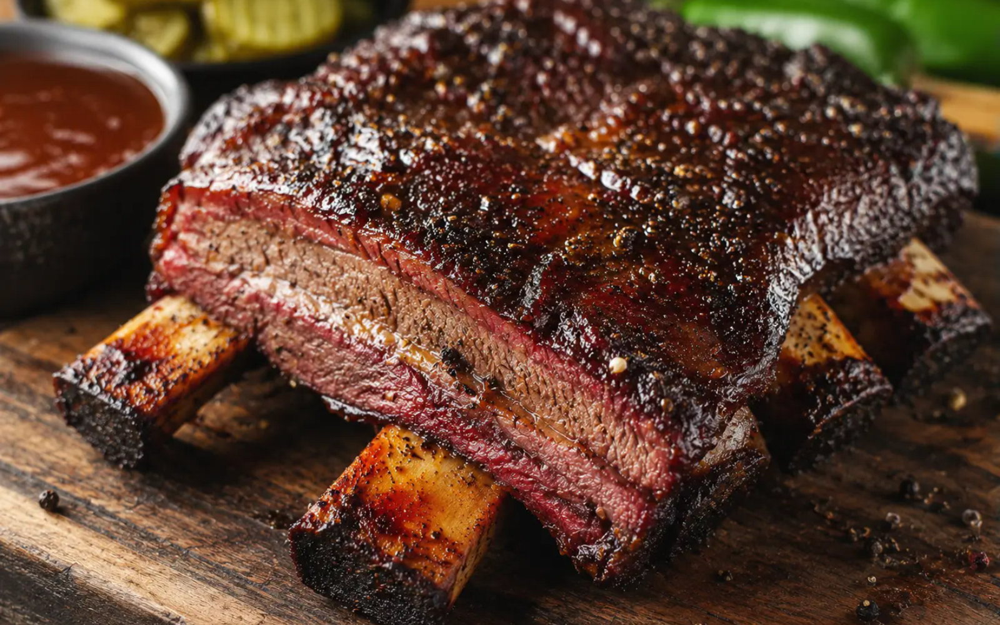
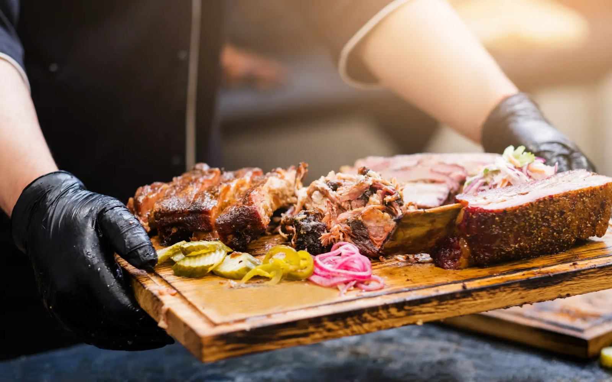
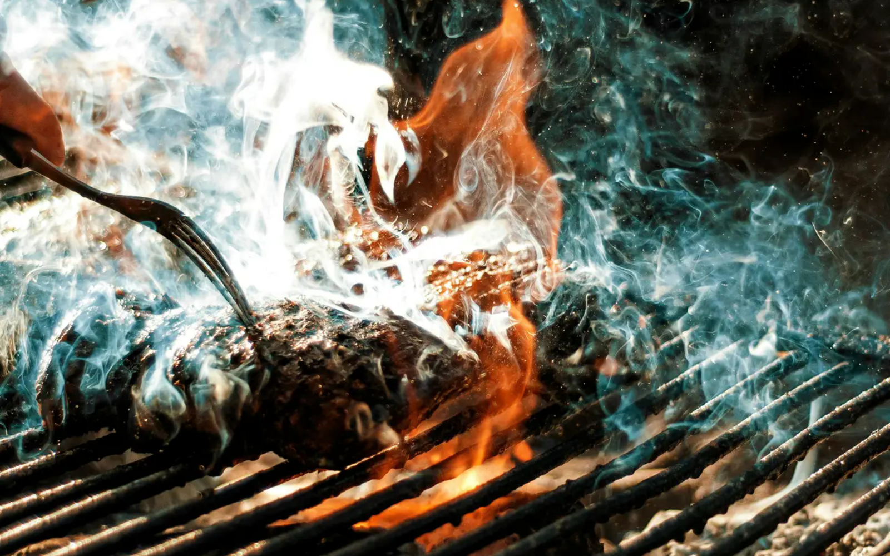
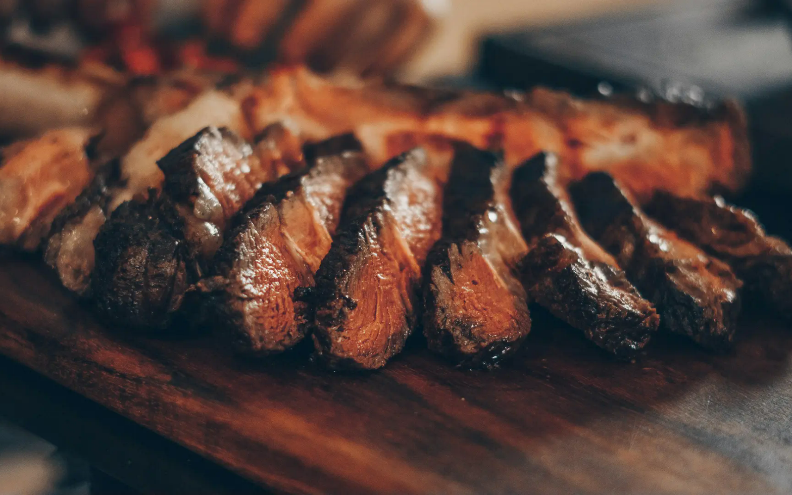

From the pit
Meats
Post Oak Brisket$18 / 1/2 lb
Pepper-Crust Beef Rib$32 each
Sunday Pork Spare Ribs$16 / 1/2 lb
Smoked Turkey Breast$15 / 1/2 lb
Green Chile Sausage$7 / link
Austin smokehouse · 214 Cinder Lane
Post oak, patient cooks, and trays built for passing around. Come early, bring people, and leave the decisions to the pit.


Built around the fireOur story
Ember & Oak is a neighborhood smokehouse built around the ritual of early mornings, stacked wood, patient cooks, and trays made for sharing.
The room is casual, the line moves fast, and every plate is framed by simple sides, house pickles, and a little extra sauce on the table.
Read the original story ↗
True smokehouse hospitality
Drop-off trays, staffed service, and large-format spreads for office lunches, backyard dinners, and milestone nights.
Take a tour
Step behind the counter, watch the pit room wake up, and finish with a tray stacked for tasting.


Find your table
The table is waiting